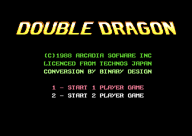
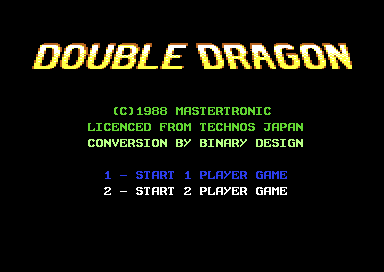

<meta charset="utf-8">
<meta name="viewport" content="width=device-width, initial-scale=1">
<title>{{title}}</title>
<link rel="stylesheet" href="../../lib/site.css">
<style>
.dd-pair{display:grid;grid-template-columns:repeat(2,minmax(0,1fr));gap:1rem}
.dd-pair figure{margin:0}.dd-pair canvas,.dd-pair img{display:block;width:100%;height:auto;image-rendering:pixelated}
.dd-controls{display:flex;flex-wrap:wrap;gap:.7rem;align-items:center}
.dd-controls select{max-width:100%}.dd-controls label{display:flex;gap:.5rem;align-items:center}
@media(max-width:650px){.dd-pair{grid-template-columns:1fr}}
</style>
<!-- tabs -->
<header class="hero"><p class="eyebrow">{{year}} · {{publisher}}</p><h1>{{title}}</h1><p class="sub">Two C64 disks show different names on the title screen and share the same six level files. One puts a game-over screen between a lost run and the title.</p></header>
<main class="wrap">

<section id="editions"><h2>Two title screens</h2>
<div class="plate dd-pair">
<figure><figcaption>AD disk. The title credits Arcadia Software.</figcaption></figure>
<figure><figcaption>TO disk. The title credits Mastertronic.</figcaption></figure>
</div>
<p>The two disks are named here by their directory identifiers, AD and TO. Both titles name Binary Design for the conversion and Technos Japan for the licence. Each lets you start with one player or two.</p>
</section>
<section id="opening" data-part="resident"><h2>Outside the garage</h2>
<div class="plate dd-pair"><figure><figcaption>The opening scene, captured on the TO disk in VICE.</figcaption></figure></div>
<p>The lone fighter moves with a joystick in port 2. The input routine at <code>$3450</code> reads that port. On both disks, holding right moves the fighter along the street, while down moves him toward the bottom of the screen.</p>
<p>The game draws the street in small characters. The routine at <code>$6049</code> copies 40 characters at a time from the map, then jumps ahead to the next row. The <a href="levels.html">level browser</a> compares this background with the game in motion.</p>
</section>
<section id="restart" data-part="loader-to"><h2>TO shows Game Over</h2>
<p>Both editions reload the title when the game-over path runs. On TO, the loader first writes the words GAME OVER to the screen and holds them there. The added display begins at <code>$8100</code>. On AD, the same game-over transition goes back to the title without this screen.</p>
<div class="plate dd-pair"><figure><figcaption>TO, captured during a test of the game's game-over transition.</figcaption></figure></div>
</section>
<section id="status"><h2>What the analysis covers</h2>
<p>Both programs were run through all six level loads and the ending. The two disks contain matching copies of the level resources, the colour transfer routine, and the ending. The Source tab records the parts that were captured. Combat, the complete sound selection rules, and the remaining data formats are open.</p>
</section>
</main>
